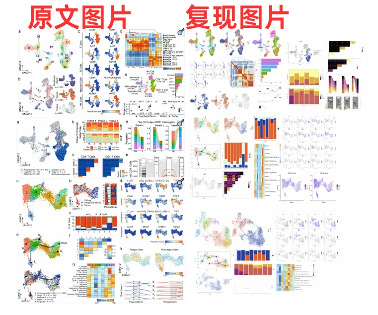
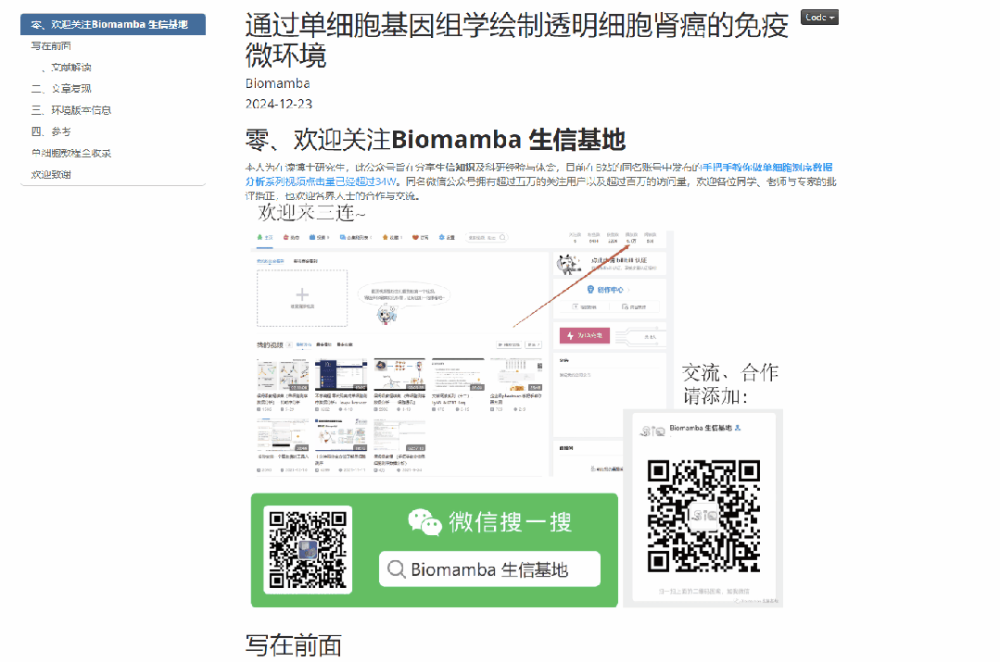
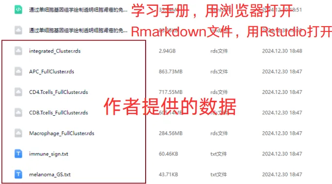

代码复现| scRNA-seq绘制透明细胞肾症的免疫微环境
原文：https://mp.weixin.qq.com/s?__biz=MzAwMzIzOTk5OQ==&mid=2247531979&idx=2&sn=4f4b960916888e05dd191fdc4ee1c2a8&chksm=9b3c049bac4b8d8d1e3a82f73a0182c8d900a93518dd4c45b1c9b0233fec39231a9607f3d8e6#rd 合集：全文复现

学习手册

 本次教程中，我们复写了题为"Mapping the immune environment in clear cell renal carcinoma by single-cell genomics"的文章(doi: 10.1038/s42003-020-01625-6)。本文表征了Clear cell renal cell carcinoma（ccRCC）的肿瘤免疫微环境，作者对3例ccRCC配对患者的肿瘤和血液组织进行scRNA-seq测序和TCR测序，绘制了CD45+淋巴细胞和髓系细胞图谱。另外还纳入了来自另外四个个体的11,367个来自正常肾脏和外周血的免疫细胞，以促进ccRCC特异性差异的识别和评估。主要发现包括：(1)与正常肾组织相比，肿瘤浸润的免疫细胞中的CD8+T细胞和巨噬细胞总体增加(2)证明了肿瘤浸润性CD8+T细胞的不同细胞转录状态(3)确定了MKI67+增殖亚群是ccRCC进展的潜在罪魁祸首
自学有困难的同学不妨看看：这可能是全网最全的scRNA-seq分析教程！本教程基于Linux环境演示，计算资源不足的同学可参考：
足够支持你完成硕博生涯的生信环境
忘记宣传了，独享用户连技术支持都是独享的
RTX5090、4080S、5070显卡上机访问链接：https://biomamba.xiyoucloud.net/欢迎联系客服微信[Biomamba_zhushou]获取帮助
如果你对下面的教程比较迷茫，那么你可以先行学习编程教程：十小时学会Linux
生信Linux及服务器使用技巧5.5h入门R语言
本次教程中，我们复写了题为"Mapping the immune environment in clear cell renal carcinoma by single-cell genomics"的文章(doi: 10.1038/s42003-020-01625-6)。本文表征了Clear cell renal cell carcinoma（ccRCC）的肿瘤免疫微环境，作者对3例ccRCC配对患者的肿瘤和血液组织进行scRNA-seq测序和TCR测序，绘制了CD45+淋巴细胞和髓系细胞图谱。另外还纳入了来自另外四个个体的11,367个来自正常肾脏和外周血的免疫细胞，以促进ccRCC特异性差异的识别和评估。主要发现包括：(1)与正常肾组织相比，肿瘤浸润的免疫细胞中的CD8+T细胞和巨噬细胞总体增加(2)证明了肿瘤浸润性CD8+T细胞的不同细胞转录状态(3)确定了MKI67+增殖亚群是ccRCC进展的潜在罪魁祸首
自学有困难的同学不妨看看：这可能是全网最全的scRNA-seq分析教程！本教程基于Linux环境演示，计算资源不足的同学可参考：
足够支持你完成硕博生涯的生信环境
忘记宣传了，独享用户连技术支持都是独享的
RTX5090、4080S、5070显卡上机访问链接：https://biomamba.xiyoucloud.net/欢迎联系客服微信[Biomamba_zhushou]获取帮助
如果你对下面的教程比较迷茫，那么你可以先行学习编程教程：十小时学会Linux
生信Linux及服务器使用技巧5.5h入门R语言
本教程复现集锦 ：

-Biomamba
所见即所得
学习手册以html文件格式提供，可在浏览器中打开并翻阅学习

教程目录 ：
一、准备工作
1.1 硬件准备 1.2 单细胞基础
二、文献解读
2.1 摘要2.2 主要内容2.3 总结讨论
三、文章复现
3.1 复现集锦3.2 数据下载3.3 ccRCC中免疫细胞的单细胞图谱3.4 外周血和肿瘤中CD8+T和CD4+T克隆型比较3.5 ccRCC中CD8+T细胞存在不同亚群转录连续体3.6 ccRCC中CD4+T细胞亚群特征识别3.7 ccRCC中巨噬细胞分化差异
**四、**环境版本信息
五、参考
文末下载链接中包含的内容：

测试文件约5.39GB ，大家注意按需下载！
解锁前需阅读：2025订阅须知

文末还可解锁以下内容


2025订阅合集持续更新中，联系客服微信[Biomamba_zhushou]可以219￥获取全部资料(包括今年后面更新的内容)。当然，付费不是目的，以下资料都可以通过转发领取(更推荐这种方式)。
手册下载链接：
学习手册与测试文件链接:
https://pan.baidu.com/s/1dccgha7TuW2LebQqpY7mwQ?pwd
提取码可联系客服微信[Biomamba_zhushou]领取
-Biomamba


如何联系我们

 留一个领取资料、开箱即用的单细胞分析镜像的微信号[Biomamba_zhushou]，方便各位随时交流。同时我们也构建了交流群矩阵，欢迎大家入群讨论。
大家可以阅读完这几篇之后添加给生信入门初学者的小贴士
没有检索，就没有发言权
留一个领取资料、开箱即用的单细胞分析镜像的微信号[Biomamba_zhushou]，方便各位随时交流。同时我们也构建了交流群矩阵，欢迎大家入群讨论。
大家可以阅读完这几篇之后添加给生信入门初学者的小贴士
没有检索，就没有发言权
已有生信基地联系方式的同学无需重复添加

 您点的每个赞和在看，我都认真当成了喜欢
您点的每个赞和在看，我都认真当成了喜欢